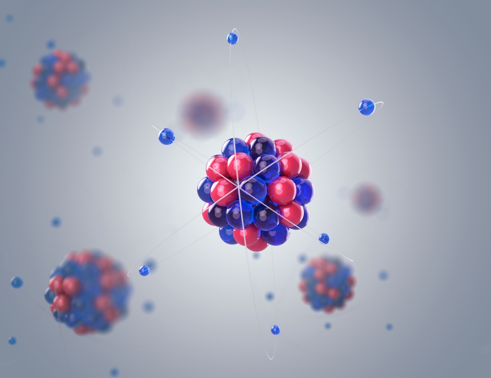

Sistemas Computacionales
Autor : Edgar Antonio Lopez Zarate

Definición:
La química cuántica es una rama de la química teórica donde se aplica la mecánica cuántica y la teoría cuántica de campos. Describe matemáticamente el comportamiento fundamental de la materia a escala molecular.